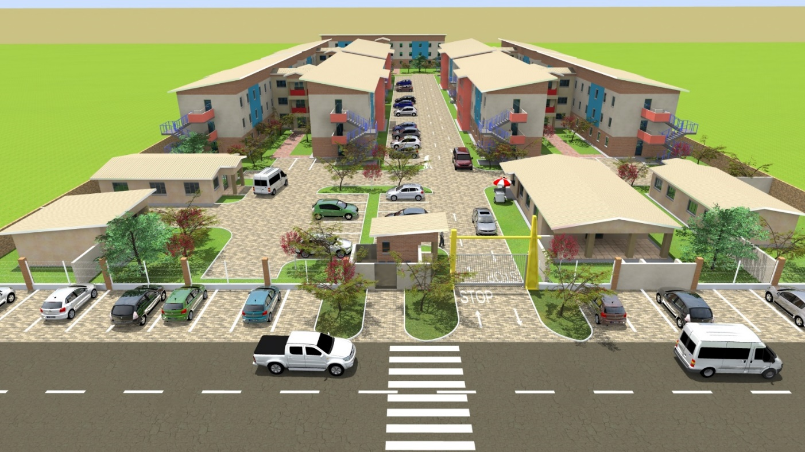
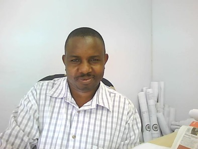

Good design improves quality of life.
The profile connects good design and quality workmanship with modern buildings that are comfortable to live and work in.
A South African registered multidisciplinary practice established in 2012, bringing together architectural, civil & structural, quantity surveying and project management capabilities.
KALM.Ntg Architects (Pty) Ltd is described in the company profile as a South African registered 100% B-BBEE black owned professional multidisciplinary practice established in 2012.
The company is headed by Lovemore A. Munyaradzi, a Bachelor of Architecture graduate and registered Architect with SACAP registration PrArch 21932. The profile describes the practice as comprising Architectural, Civil and Structural, Quantity Surveying and Project Management professionals.

Professional services across the built environment.
The profile connects good design and quality workmanship with modern buildings that are comfortable to live and work in.
The mission statement emphasises client requirements, National Building Regulations, sound relationships and opportunities for historically disadvantaged members of communities.
The profile describes strategic partnerships and associations with built-environment professionals to provide multidisciplinary and turnkey services when required.
Click a team member to open a dedicated profile page. The supplied company profile contains one team portrait; the other profiles use clearly marked initials rather than fabricated photographs.

B Arch • SACAP PrArch 21932
B Arch • SACAP Pr Arch 21097
BSc QS • Candidate QS (IT6633)
B Tech • SACAP PSAT 24693625
Master Commerce in Programme Management
B. Eng • Pr. Tech
B.Tech Arch • listed as Pr. Eng
Programme Manager • Pr. SACPCMP
Diploma listed • Pr. SACPCMP
The company profile outlines an approach covering inception, concept and viability, detailed design development, documentation and procurement, contract administration and inspection, and project close out.
View methodology →